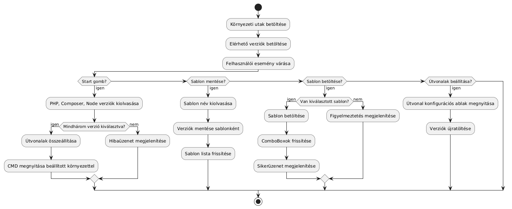
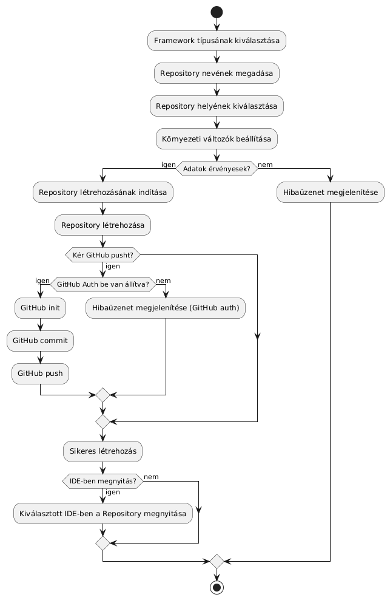
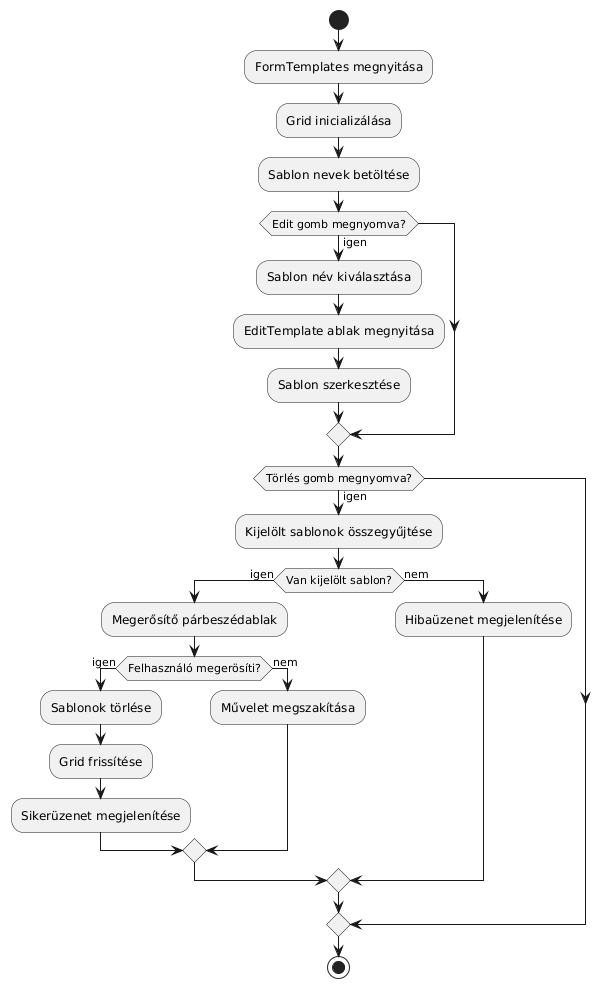
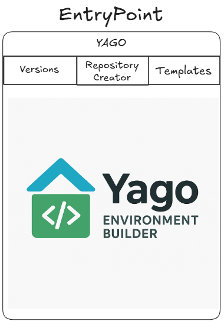
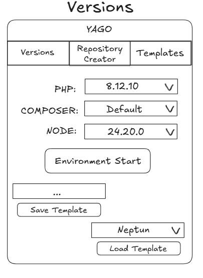
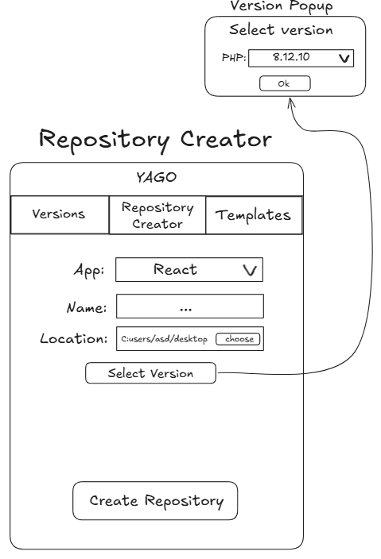
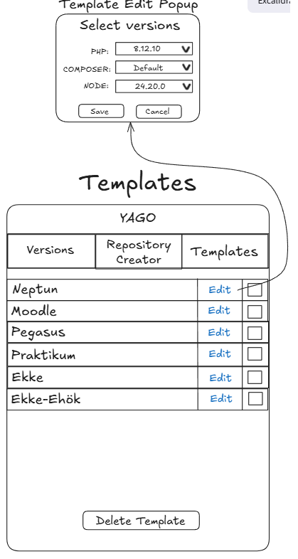

Funkcionális specifikáció
Bevezetés
A Yago Environment Builder egy Windows Forms alapú asztali alkalmazás, amely a fejlesztők munkáját segíti azáltal, hogy automatizálja és leegyszerűsíti a különböző fejlesztői környezetek létrehozását.
A cél, hogy a felhasználók könnyedén összeállíthassák a kívánt környezetet komponensekből (PHP, Node.js, Composer), sablonokat készíthessenek, és új repository-kat generálhassanak a beállítások alapján.
Rendszeráttekintés
- Alkalmazás típusa: Windows Forms asztali alkalmazás
- Fejlesztési nyelv: C#
- .NET verzió: 4.7.2
- Adattárolás: helyi szöveges fájl
Fő modulok:
- EntryPoint (Kezdőképernyő): navigáció a fő modulokra, logó és információk megjelenítése.
- Versions modul: környezetkomponensek verzióinak kiválasztása, sablonok mentése és betöltése, környezet indítása.
- Repository Creator modul: új repository létrehozása a kiválasztott verziók és beállítások alapján.
- Templates modul: sablonok listázása, szerkesztése, törlése és mentése.
3. Felhasználói felületek
Kezdőképernyő (EntryPoint)
Cél: a fő modulokhoz való gyors navigáció biztosítása.
- Fő elemek:
- Yago logó
- Navigációs gombok/fül: Versions, Repository Creator, Templates
- Jellemzők: Egyszerű, áttekinthető elrendezés; minden fő modul egy kattintással elérhető.
Versions modul
Cél: a fejlesztői környezet komponenseinek verzióinak kiválasztása és kezelése.
- Fő elemek:
- Legördülő listák a komponensekhez: PHP verzió, Composer verzió, Node.js verzió
- Gombok: Mentés sablonként, Betöltés sablonból, Verzió elérési útvonalak, Indítás
- Jellemzők: Csak érvényes verziók választhatók; mentéskor a sablon adatai frissülnek a Templates.txt fájlban; hibák esetén visszajelzés jelenik meg.
Repository Creator modul
Cél: új projekt repository létrehozása a felhasználó által megadott beállítások alapján.
- Adatbeviteli mezők:
- App típusa (React, Laravel, Angular stb.)
- Projekt neve
- Mentés helye (helyi könyvtár kiválasztása)
- Verziók kiválasztása a Versions modulból
- Lehetőség a létrehozott repositoryt GitHubra feltölteni
- Lehetőség a repository megnyitárására a kiválasztott IDE-ben
- Gomb: Verzió kiválasztása, Git Auth, Repozitórium létrehozása
- Jellemzők: Ellenőrzi a projekt név és mentési hely érvényességét; automatikusan létrehozza a repository szerkezetét; sikeres vagy sikertelen létrehozásról visszajelzést ad, opcionálisan pusholja egy új Git repoba, opcionálisan megnyitja IDE-ben a repot.
Templates modul
Cél: a sablonok kezelése (listázás, szerkesztés, törlés, mentés).
- Fő elemek:
- Táblázatos lista: sablonok nevei
- Edit gomb: a kiválasztott sablon szerkesztése (popup ablak)
- Delete Template gomb: sablon törlése
- Jellemzők: Sablonok könnyen kiválaszthatók és kezelhetők; mentéskor a Templates.txt fájl frissül; hibák esetén visszajelzés jelenik meg.
4. Funkcionális folyamatok
Versions modul folyamata
- A felhasználó megnyitja a Versions fület
- A felhasználó kiválasztja a kívánt verziókat a mezőkbe.
- A felhasználó megnyomja az Environment Start gombot.
- A rendszer ellenőrzi: minden kötelező mező ki van-e töltve, a verzióformátum megfelelő-e.
- Ha az ellenőrzés sikeres: a rendszer inicializálja a környezetet (lokális konfigurációk).
- A felhasználónak van lehetősége megadni a template nevét és rányomva a save template gombra elmentésre kerülnek a megadott konfigurációk.
- A felhasználónak van lehetősége egy meglévő template beállításait is beimportálni.
Repository Creator modul folyamata
- A felhasználó megnyitja a Repository Creator fület.
- A felhasználó megadja az App típusát, a Projekt nevét és a Helyét.
- Verzió kiválasztása: A "Select Version" gombra kattintva egy popup ablakban választhatja ki a PHP/Composer/Node verziókat.
- A Create Repository gombra kattintva a rendszer létrehozza a repository-t.
- Amennyiben nem 'None' értéket választott ki az IDE megadásánál, a megadott IDE-ben megnyílik a repozitórium.
- Amennyiben kiválasztotta a 'Git létrehozása' kapcsolót, és a Git Auth formon beállította a saját GitHub felhasználónevét, tokenjét, akkor a lokális létrehozás után pusholódik a repozitórium egy új Git repo.-ba.
Templates modul folyamata
- Edit Template: Az 'Edit' gombra kattintva popup ablak nyílik, ahol módosíthatók a verziók.
- A 'Save'' gomb után a rendszer ellenőriz és frissíti a Templates.txt fájlt és a listát.
- Delete Template: A törölni kívánt sablonok checkbox-ának bejelölése és a 'Delete Template' gomb megnyomása után – megerősítést követően – a rendszer törli a sorokat a fájlból és frissíti a listát.
6. Példa UML diagramok
Versions UML Diagram:

Repository Creator UML Diagram:

Template UML Diagram:

7. Felhasználói felületek
EntryPoint

Versions

Repository Creator

Templates

8. Rendszerkövetelmények
- A Yago alkalmazás kizárólag Windows operációs rendszeren futtatható.
- A működéshez szükséges a .NET Runtime 8.0 vagy újabb verzió telepítése.
- Az alkalmazás nem tartalmaz automatikus verziófrissítési funkciót, manuális frissítés szükséges.
- Egyfelhasználós asztali alkalmazás.
9. Elfogadási kritériumok
- A felhasználó a kezdőképernyőről navigálhat a három fő modulra (Versions, Repository Creator, Templates).
- A felhasználó kiválaszthatja a PHP, Composer és Node.js verziókat.
- A felhasználó menthet és betölthet sablonokat.
- A felhasználó elindíthatja a fejlesztői környezetet a kiválasztott beállításokkal.
- A felhasználó új repository-t hozhat létre érvényes névvel és útvonallal.
- Hiba esetén figyelmeztető üzenet jelenik meg.
- A felhasználó szerkeszthet és törölhet sablonokat.
- Minden fő művelet után visszajelzés jelenik meg.
10. Jövőbeli funkciók
- Automatikus frissítés és verzióellenőrzés: Online ellenőrzés és sablonfrissítés.
- Sablonok felhőalapú szinkronizálása: Több eszköz közötti megosztás.
- Többfelhasználós támogatás: Bejelentkezési rendszer és profilok.
- Projektek exportálása és megosztása: Teljes konfiguráció átvitele más felhasználókhoz.
- Fejlettebb hibakezelés és naplózás: Részletes logfájlok létrehozása.